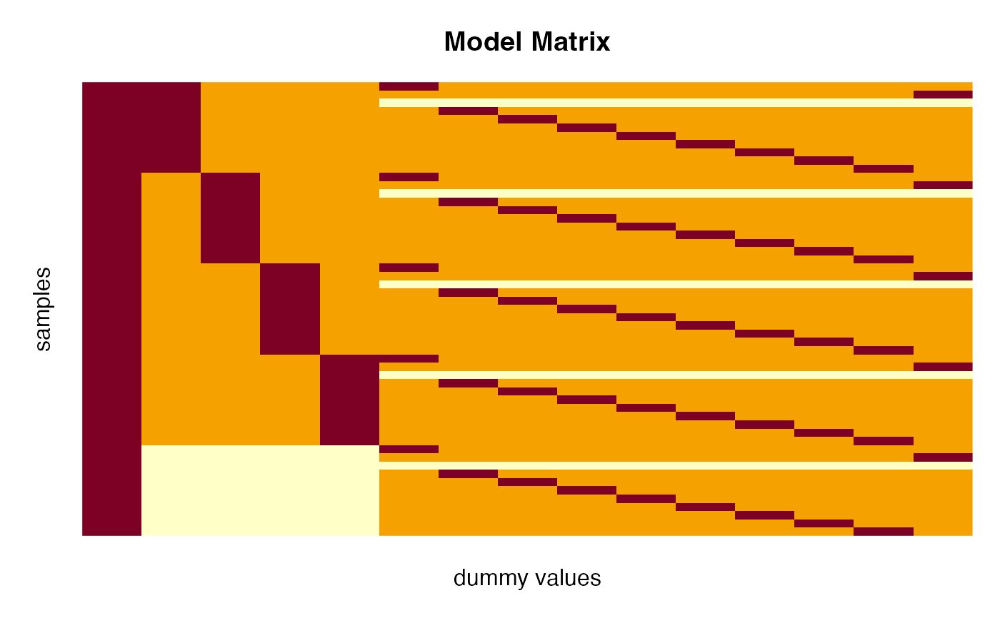

Extraction functions to retrieve the model.frame and model.matrix of an asca object.
Usage
# S3 method for class 'asca'
model.frame(formula, ...)
# S3 method for class 'asca'
model.matrix(object, ...)Examples
# Load candies data
data(candies)
# Basic ASCA model with two factors
mod <- asca(assessment ~ candy + assessor, data=candies)
# Extract model frame and model matrix
mf <- model.frame(mod)
head(mf)
#> assessment.transparent assessment.acid assessment.sweet assessment.raspberry
#> 1 4.80 2.10 13.50 10.35
#> 2 2.70 6.30 13.65 12.60
#> 3 2.85 4.80 7.80 2.85
#> 4 3.15 0.30 14.25 14.40
#> 5 3.75 0.45 14.40 14.40
#> 6 0.45 1.65 14.10 10.35
#> assessment.texture assessment.strength assessment.hardness
#> 1 12.75 10.05 3.90
#> 2 12.15 4.65 2.25
#> 3 11.40 3.90 3.60
#> 4 14.40 3.75 6.15
#> 5 13.95 7.35 1.65
#> 6 13.95 4.05 1.50
#> assessment.elasticity assessment.sticky candy assessor
#> 1 1.65 1.65 1 1
#> 2 2.10 3.00 1 1
#> 3 2.70 3.15 1 1
#> 4 4.20 6.45 1 10
#> 5 0.45 1.80 1 10
#> 6 1.20 4.05 1 10
mm <- model.matrix(mod)
par.old <- par(mar=c(3,3,3,1), mgp=c(1,0.7,0))
image(t(mm[seq(165,1,-1),]), main="Model Matrix", xlab="dummy values", ylab="samples",
axes=FALSE)

par(par.old)